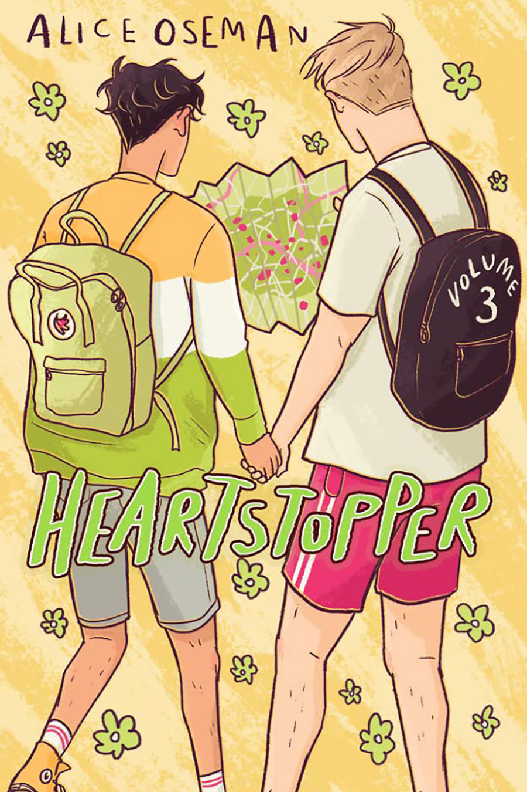

Nina's Read Books
Dial A for Aunties

Rating: 5 stars
When Meddelin Chan ends up accidentally killing her blind date, her meddlesome mother calls for her even more meddlesome aunties to help get rid of the body. Unfortunately, a dead body proves to be a lot more challenging to dispose of than one might anticipate, especially when it is inadvertently shipped in a cake cooler to the over-the-top billionaire wedding Meddy, her Ma, and aunties are working at an island resort on the California coastline. It's the biggest job yet for the family wedding business—"Don't leave your big day to chance, leave it to the Chans!"—and nothing, not even an unsavory corpse, will get in the way of her auntie's perfect buttercream flowers.
But things go from inconvenient to downright torturous when Meddy's great college love—and biggest heartbreak—makes a surprise appearance amid the wedding chaos. Is it possible to escape murder charges, charm her ex back into her life, and pull off a stunning wedding all in one weekend?
What happens when you mix 1 (accidental) murder with 2 thousand wedding guests, and then toss in a possible curse on 3 generations of an immigrant Chinese-Indonesian family?
You get 4 meddling Asian aunties coming to the rescue!
The Lightning Thief

Rating: 5 stars
Percy Jackson is about to be kicked out of boarding school...again. And that's the least of his troubles. Lately, mythological monsters and the gods of Mount Olympus seem to be walking straight out of the pages of Percy's Greek mythology textbook and into his life. And worse, he's angered a few of them. Zeus' master lightning bolt has been stolen, and Percy is the prime suspect.
Now Percy and his friends have just ten days to find and return Zeus' stolen property and bring peace to a warring Mount Olympus. But to succeed on his quest, Percy will have to do more than catch the true thief: he must come to terms with the father who abandoned him; solve the riddle of the Oracle, which warns him of betrayal by a friend; and unravel a treachery more powerful than the gods themselves.
The Sea of Monsters

Rating: 5 stars
Percy Jackson's seventh-grade year has been surprisingly quiet. Not a single monster has set foot on his New York prep-school campus. But when an innocent game of dodgeball among Percy and his classmates turns into a death match against an ugly gang of cannibal giants, things get... well, ugly. And the unexpected arrival of Percy's friend Annabeth brings more bad news: the magical borders that protect Camp Half-Blood have been poisoned by a mysterious enemy, and unless a cure is found, the only safe haven for demigods will be destroyed.
In this fresh, funny, and hugely anticipated follow up to The Lightning Thief, Percy and his friends must journey into the Sea of Monsters to save their beloved camp. But first, Percy will discover a stunning new secret about his family—one that makes him question whether being claimed as Poseidon's son is an honor or simply a cruel joke.
The Titan's Curse

Rating: 5 stars
When Percy Jackson receives an urgent distress call from his friend Grover, he immediately prepares for battle. He knows he'll need his powerful demigod allies at his side; his trusty bronze sword, Riptide; and... a ride from his mom.
The demigods race to the rescue to find that Grover has made an important discovery: two powerful half-bloods, whose parentage is unknown. But that's not all that awaits them. The Titan lord Kronos has set up a devious trap, and the young heroes have just fallen prey.
Hilarious and action-packed, this third adventure in the series finds Percy faced with his most dangerous challenge yet--the chilling prophecy of the Titan's curse.
The Battle of the Labyrinth

Rating: 5 stars
Percy Jackson isn't expecting freshman orientation to be any fun. But when a mysterious mortal acquaintance appears at his potential new school, followed by demon cheerleaders, things quickly move from bad to worse.
In this fourth installment of the blockbuster series, time is running out as war between the Olympians and the evil Titan lord Kronos draws near. Even the safe haven of Camp Half-Blood grows more vulnerable by the minute as Kronos's army prepares to invade its once impenetrable borders. To stop the invasion, Percy and his demigod friends must set out on a quest through the Labyrinth - a sprawling underground world with stunning surprises at every turn.
The Last Olympian
Rating: 5 stars
All year the half-bloods have been preparing for battle against the Titans, knowing the odds of a victory are grim. Kronos's army is stronger than ever, and with every god and half-blood he recruits, the evil Titan's power only grows.
While the Olympians struggle to contain the rampaging monster Typhon, Kronos begins his advance on New York City, where Mount Olympus stands virtually unguarded. Now it's up to Percy Jackson and an army of young demigods to stop the Lord of Time.
In this momentous final book in the New York Times best-selling series, the long-awaited prophecy surrounding Percy's sixteenth birthday unfolds. And as the battle for Western civilization rages on the streets of Manhattan, Percy faces a terrifying suspicion that he may be fighting against his own fate.
Heartstopper: Volume One

Rating: 5 stars
Boy meets boy. Boys become friends. Boys fall in love. A sweet and charming coming-of-age story that explores friendship, love, and coming out.
Shy and softhearted Charlie Spring sits next to rugby player Nick Nelson in class one morning. A warm and intimate friendship follows, and that soon develops into something more for Charlie, who doesn't think he has a chance.
But Nick is struggling with feelings of his own, and as the two grow closer and take on the ups and downs of high school, they come to understand the surprising and delightful ways in which love works.
Heartstopper: Volume Two
Rating: 5 stars
Nick and Charlie are best friends. Nick knows Charlie's gay, and Charlie is sure that Nick isn't.
But love works in surprising ways, and Nick is discovering all kinds of things about his friends, his family... and himself.
Heartstopper: Volume Three
Rating: 5 stars
Charlie didn't think Nick could ever like him back, but now they're officially boyfriends. Nick has even found the courage to come out to his mom.
But coming out isn't something that happens just once, and Nick and Charlie try to figure out when to tell their friends that they're dating. Not being out to their classmates gets even harder during a school trip to Paris. As Nick and Charlie's feelings get more serious, they'll need each other more than ever.
Heartstopper: Volume Four
Rating: 5 stars
Charlie and Nick's relationship has been going really well, and Charlie thinks he's ready to say those three little words: I love you.
How to Overcome Anxiety
Rating: 3 stars
Las batallas en el desierto

Rating: 4 stars
Historia de un amor imposible, narración de un terror cotidiano que los protagonistas preferirían creer que se trata de algo fantasmagórico, Las batallas en el desierto es una magistral novela breve que involucra otros aspectos como la corrupción social y política, el inicio del México moderno y la desaparición del país tradicional, el testimonio de las transformaciones de nuestras vidas y nuestra historia, y el rescate de las memorias individuales y colectivas de una ciudad a la que José Emilio Pacheco ama profundamente, pero recrea sin nostalgia y denuncia de manera implacable.
Desde su aparición esta novela corta, traducida al inglés, francés, alemán, italiano, ruso, japonés y griego, y publicada en otras partes del mundo hispano, asombró por su aparente sencillez y la estructura compleja que tiende lazos para una variedad de lecturas múltiples y diferentes, y para una complicidad que hermana para siempre al lector con el autor.
People We Meet on Vacation

Rating: 5 stars
Two best friends. Ten summer trips. One last chance to fall in love.
Poppy and Alex. Alex and Poppy. They have nothing in common. She's a wild child; he wears khakis. She has insatiable wanderlust; he prefers to stay home with a book. And somehow, ever since a fateful car share home from college many years ago, they are the very best of friends. For most of the year they live far apart—she's in New York City, and he's in their small hometown—but every summer, for a decade, they have taken one glorious week of vacation together.
Until two years ago, when they ruined everything. They haven't spoken since.
Poppy has everything she should want, but she's stuck in a rut. When someone asks when she was last truly happy, she knows, without a doubt, it was on that ill-fated, final trip with Alex. And so, she decides to convince her best friend to take one more vacation together—lay everything on the table, make it all right. Miraculously, he agrees.
Now she has a week to fix everything. If only she can get around the one big truth that has always stood quietly in the middle of their seemingly perfect relationship. What could possibly go wrong?
Nick and Charlie
Rating: 5 stars
Absence makes the heart grow fonder, right?
CHARLIE: “I have been going out with Nick Nelson for two years. He likes rugby, Formula 1, dogs, the Marvel universe, the sound felt-tips make on paper, rain and drawing on shoes. He also likes me.”
NICK: “Things me and Charlie Spring do together include: Watch films. Sit in the same room on different laptops. Text each other from different rooms. Make out. Make food. Make drinks. Get drunk. Talk. Argue. Laugh. Maybe we're kind of boring. But that's fine with us.”
Everyone knows that Nick and Charlie are the perfect couple - that they're inseparable. But now Nick is leaving for university, and Charlie will be left behind at Sixth Form. Everyone's asking if they're staying together, which is a stupid question - they're 'Nick and Charlie' for God's sake!
But as the time to say goodbye gets inevitably closer, both Nick and Charlie question whether their love is strong enough to survive being apart. Or are they delaying the inevitable? Because everyone knows that first loves rarely last forever...
The Seven Husbands of Evelyn Hugo

Rating: 5 stars
Aging and reclusive Hollywood movie icon Evelyn Hugo is finally ready to tell the truth about her glamorous and scandalous life. But when she chooses unknown magazine reporter Monique Grant for the job, no one is more astounded than Monique herself. Why her? Why now?
Transcendent Kingdom
Rating: 4 stars
Yaa Gyasi's stunning follow-up to her acclaimed national best seller Homegoing is a powerful, raw, intimate, deeply layered novel about a Ghanaian family in Alabama.
Gifty is a fifth-year candidate in neuroscience at Stanford School of Medicine studying reward-seeking behavior in mice and the neural circuits of depression and addiction. Her brother, Nana, was a gifted high school athlete who died of a heroin overdose after a knee injury left him hooked on OxyContin. Her suicidal mother is living in her bed. Gifty is determined to discover the scientific basis for the suffering she sees all around her.
But even as she turns to the hard sciences to unlock the mystery of her family's loss, she finds herself hungering for her childhood faith and grappling with the evangelical church in which she was raised, whose promise of salvation remains as tantalizing as it is elusive. Transcendent Kingdom is a deeply moving portrait of a family of Ghanaian immigrants ravaged by depression and addiction and grief--a novel about faith, science, religion, love. Exquisitely written, emotionally searing, this is an exceptionally powerful follow-up to Gyasi's phenomenal debut.
Anxious People
Rating: 5 stars
Looking at real estate isn't usually a life-or-death situation, but an apartment open house becomes just that when a failed bank robber bursts in and takes a group of strangers hostage. The captives include a recently retired couple who relentlessly hunt down fixer-uppers to avoid the painful truth that they can't fix their own marriage. There's a wealthy bank director who has been too busy to care about anyone else and a young couple who are about to have their first child but can't seem to agree on anything. Add to the mix an eighty-seven-year-old woman who has lived long enough not to be afraid of someone waving a gun in her face, a flustered but still-ready-to-make-a-deal real estate agent, and a mystery man who has locked himself in the apartment's only bathroom, and you've got the worst group of hostages in the world.
Each of them carries a lifetime of grievances, hurts, secrets, and passions that are ready to boil over. None of them is entirely who they appear to be. And all of them—the bank robber included—desperately crave some sort of rescue. As the authorities and the media surround the premises, these reluctant allies will reveal surprising truths about themselves and set in motion a chain of events so unexpected that even they can hardly explain what happens next.
They Both Die at the End

Rating: 5 stars
On September 5, a little after midnight, Death-Cast calls Mateo Torrez and Rufus Emeterio to give them some bad news: They're going to die today.
Mateo and Rufus are total strangers, but, for different reasons, they're both looking to make a new friend on their End Day. The good news: There's an app for that. It's called the Last Friend, and through it, Rufus and Mateo are about to meet up for one last great adventure—to live a lifetime in a single day.
La Hija Del Curandero

Rating: 4 stars
Esta es la entrañable historia de dos generaciones de mujeres unidas por la herencia de la sangre y las cualidades inefables del amor.
La anciana LuLing comienza a escribir todo lo que recuerda de su infancia y juventud en China. Una vida azarosa de leyendas, fantasmas, maldiciones y amores. Su hija Ruth, una escritora de libros de encargo sumida en problemas existenciales, empieza a sospechar que su madre está muy enferma. Entonces descubre los escritos de LuLing, y se abre ante ella un pasado rico y revelador. Las páginas caligrafiadas de la anciana encierran una verdad íntima que nunca fue capaz de contar a su hija, pero que al mismo tiempo desea que esta no olvide. En el transcurso de un año, madre e hija reconcilian sus historias y conjuran el pesar de sus sueños rotos.
El camino del arquero

Rating: 5 stars
Tetsuya es el mejor arquero del país, pero vive retirado en un valle remoto y trabaja de humilde carpintero. Un día, otro arquero que viene de lejos le desafía. Tetsuya acepta el reto y le demuestra al extranjero que para vencer tanto con el arco como en la vida no basta la habilidad técnica. Un joven del pueblo le insiste para que le transmita su saber. El maestro le advierte: puede enseñarle las reglas necesarias, pero es él quien deberá trabajar sobre sí mismo. Es así como Tetsuya empieza a enseñar a su nuevo discípulo el misterioso «camino del arquero», el recorrido de toda una vida.
La escapista
Rating: 5 stars
¿Quién es Nola Brown? Un misterio. Un problema. Y se supone que está muerta.
El cuerpo de Nola Brown fue encontrado entre los restos de un avión que se desplomó misteriosamente al salir de una base militar secreta en Alaska. Sin embargo, cuando el cadáver llega a la morgue de la Base de la Fuerza Aérea de Dover, Jim Zigarowski, el embalsamador, descubre que es imposible que los restos que tiene frente a él sean los de Nola. Ella fue amiga de su hija, y Zig, como todos lo conocen, está decidido a descubrir la verdad... Si Nola sigue viva corre un grave peligro.
Nola es artista residente del Ejército de Estados Unidos, un prestigiado puesto que consiste en hacer pinturas que reflejen las consecuencias de la guerra, aportando observaciones que, de otra manera, serían pasadas por alto. Pero en su última misión vio algo que no debía, lo que le ganó un poderoso enemigo que hará todo por mantenerla en silencio.
Ahora, Nola y Zig tendrán que exponer al mundo una increíble conspiración que involucra a las más altas esferas del poder o morirán tratando de descubrir el secreto mejor guardado de los Estados Unidos: un complot que se remonta en la historia hasta el mejor escapista de todos los tiempos, Harry Houdini.
Solitaire

Rating: 5 stars
In case you're wondering, this is not a love story.
My name is Tori Spring. I like to sleep and I like to blog. Last year - before all that stuff with Charlie and before I had to face the harsh realities of A-Levels and university applications and the fact that one day I really will have to start talking to people - I had friends. Things were very different, I guess, but that's all over now.
Now there's Solitaire. And Michael Holden.
I don't know what Solitaire are trying to do, and I don't care about Michael Holden.
I really don't.
Suicide Notes

Rating: 5 stars
Fifteen-year-old Jeff wakes up on New Year's Day to find himself in the hospital—specifically, in the psychiatric ward. Despite the bandages on his wrists, he's positive this is all some huge mistake. Jeff is perfectly fine, perfectly normal; not like the other kids in the hospital with him. But over the course of the next forty-five days, Jeff begins to understand why he ended up here—and realizes he has more in common with the other kids than he thought.
Swing
Rating: 5 stars
In this YA novel in verse from bestselling authors Kwame Alexander and Mary Rand Hess (Solo), which Kirkus called “lively, moving, and heartfelt” in a starred review, Noah and Walt just want to leave their geek days behind and find “cool,” but in the process discover a lot about first loves, friendship, and embracing life... as well as why Black Lives Matter is so important for all. Best friends Noah and Walt are far from popular, but Walt is convinced junior year is their year, and he has a plan that includes wooing the girls of their dreams and becoming amazing athletes. Never mind he and Noah failed to make their baseball team yet again, and Noah's crush since third grade, Sam, has him firmly in the friend zone. While Walt focuses on his program of jazz, podcasts, batting cages, and a “Hug Life” mentality, Noah feels stuck in status quo … until he stumbles on a stash of old love letters. Each one contains words Noah's always wanted to say to Sam, and he begins secretly creating artwork using the lines that speak his heart. But when his art becomes public, Noah has a decision to continue his life in the dugout and possibly lose the girl forever, or take a swing and finally speak out. At the same time, American flags are being left around town. While some think it's a harmless prank and others see it as a form of protest, Noah can't shake the feeling something bigger is happening to his community. Especially after he witnesses events that hint divides and prejudices run deeper than he realized. As the personal and social tensions increase around them, Noah and Walt must decide what is really important when it comes to love, friendship, sacrifice, and fate.
Normal People
Rating: 3 stars
At school Connell and Marianne pretend not to know each other. He's popular and well-adjusted, star of the school football team, while she is lonely, proud, and intensely private. But when Connell comes to pick his mother up from her job at Marianne's house, a strange and indelible connection grows between the two teenagers--one they are determined to conceal.
A year later, they're both studying at Trinity College in Dublin. Marianne has found her feet in a new social world while Connell hangs at the sidelines, shy and uncertain. Throughout their years at university, Marianne and Connell circle one another, straying toward other people and possibilities but always magnetically, irresistibly drawn back together. And as she veers into self-destruction and he begins to search for meaning elsewhere, each must confront how far they are willing to go to save the other.
The Song of Achilles

Rating: 5 stars
A thrilling, profoundly moving, and utterly unique retelling of the legend of Achilles and the Trojan War from the bestselling author of Circe.
A tale of gods, kings, immortal fame, and the human heart, The Song of Achilles is a dazzling literary feat that brilliantly reimagines Homer's enduring masterwork, The Iliad. An action-packed adventure, an epic love story, a marvelously conceived and executed page-turner, Miller's monumental debut novel has already earned resounding acclaim from some of contemporary fiction's brightest lights—and fans of Mary Renault, Bernard Cornwell, Steven Pressfield, and Colleen McCullough's Masters of Rome series will delight in this unforgettable journey back to ancient Greece in the Age of Heroes.
Playing the Palace

Rating: 5 stars
THEIR LOVE STORY CAPTIVATED THE WORLD…THE CROWN PRINCE AND THAT GUY FROM NEW YORK
When a lonely American event planner starts dating the gay Prince of Wales, a royal uproar ensues: is it true love or the ultimate meme? Find out in this hilarious romantic comedy.
After having his heart trampled on by his cheating ex, Carter Ogden is afraid love just isn't in the cards for him. He still holds out hope in a tiny corner of his heart, but even in his wildest dreams he never thought he'd meet the Crown Prince of England, much less do a lot more with him. Yes, growing up he'd fantasized about the handsome, openly gay Prince Edgar, but who hadn't? When they meet by chance at an event Carter's boss is organizing, Carter's sure he imagined all that sizzling chemistry. Or was it mutual?
This unlikely but meant-to-be romance sets off media fireworks on both sides of the Atlantic. With everyone having an opinion on their relationship and the intense pressure of being constantly in the spotlight, Carter finds ferocious obstacles to his Happily Ever After, including the tenacious disapproval of the Queen of England. Carter and Prince Edgar fight for a happy ending to equal their glorious international beginning. It's a match made on Valentine's Day and in tabloid heaven.
Dead Dead Girls

Rating: 5 stars
Harlem, 1926. Young Black women like Louise Lloyd are ending up dead.
Following a harrowing kidnapping ordeal when she was in her teens, Louise is doing everything she can to maintain a normal life. She's succeeding, too. She spends her days working at Maggie's Café and her nights at the Zodiac, Harlem's hottest speakeasy. Louise's friends, especially her girlfriend, Rosa Maria Moreno, might say she's running from her past and the notoriety that still stalks her, but don't tell her that.
When a girl turns up dead in front of the café, Louise is forced to confront something she's been trying to ignore—two other local Black girls have been murdered in the past few weeks. After an altercation with a police officer gets her arrested, Louise is given an ultimatum: She can either help solve the case or wind up in a jail cell. Louise has no choice but to investigate and soon finds herself toe-to-toe with a murderous mastermind hell-bent on taking more lives, maybe even her own...
#Murdertrending

Rating: 5 stars
@doctorfusionbebop: Some 17 y.o. chick named Dee Guerrera was just sent to Alcatraz 2.0 for killing her stepsister. So, how long do you think she'll last?
@morrisdavis72195: I hope she meets justice! She'll get what's coming to her! BWAHAHA!
@EltonJohnForevzz: Me? I think Dee's innocent. And I hope she can survive.
The Complete Tales of Winnie-the-Pooh

Rating: 5 stars
In 1926, "Winnie-the-Pooh," a collection of stories about a rather stout, somewhat confused bear, was published in England and America. The enchanting tales of Pooh, Piglet, Eeyore, Christopher Robin, and the others were an immediate success, and firmly established A.A. Milne, already an acclaimed dramatist, as a major author of children's books. "Winnie-the-Pooh" was followed in 1928 by a second collection, "The House At Pooh Corner," which continued the adventures from the Hundred Acre Wood and introduced bouncy, lovable Tigger.
The Bad Beginning

Rating: 5 stars
Dear Reader,
I'm sorry to say that the book you are holding in your hands is extremely unpleasant. It tells an unhappy tale about three very unlucky children. Even though they are charming and clever, the Baudelaire siblings lead lives filled with misery and woe. From the very first page of this book when the children are at the beach and receive terrible news, continuing on through the entire story, disaster lurks at their heels. One might say they are magnets for misfortune.
In this short book alone, the three youngsters encounter a greedy and repulsive villain, itchy clothing, a disastrous fire, a plot to steal their fortune, and cold porridge for breakfast.
It is my sad duty to write down these unpleasant tales, but there is nothing stopping you from putting this book down at once and reading something happy, if you prefer that sort of thing.
With all due respect,
Lemony Snicket
The Reptile Room
Rating: 5 stars
Dear Reader,
If you have picked up this book with the hope of finding a simple and cheery tale, I'm afraid you have picked up the wrong book altogether. The story may seem cheery at first, when the Baudelaire children spend time in the company of some interesting reptiles and a giddy uncle, but don't be fooled. If you know anything at all about the unlucky Baudelaire children, you already know that even pleasant events lead down the same road to misery.
In fact, within the pages you now hold in your hands, the three siblings endure a car accident, a terrible odor, a deadly serpent, a long knife, a large brass reading lamp, and the appearance of a person they'd hoped never to see again.
I am bound to record these tragic events, but you are free to put this book back on the shelf and seek something lighter.
With all due respect,
Lemony Snicket
The Wide Window
Rating: 5 stars
Dear Reader,
If you have not read anything about the Baudelaire orphans, then before you read even one more sentence, you should know this: Violet, Klaus, and Sunny are kindhearted and quick-witted; but their lives, I am sorry to say, are filled with bad luck and misery. All of the stories about these three children are unhappy and wretched, and this one may be the worst of them all. If you haven't got the stomach for a story that includes a hurricane, a signalling device, hungry leeches, cold cucumber soup, a horrible villain, and a doll named Pretty Penny, then this book will probably fill you with despair. I will continue to record these tragic tales, for that is what I do. You, however, should decide for yourself whether you can possibly endure this miserable story.
With all due respect,
Lemony Snicket
The Miserable Mill

Rating: 5 stars
Dear Reader,
I hope, for your sake, that you have not chosen to read this book because you are in the mood for a pleasant experience. If this is the case, I advise you to put this book down instantaneously, because of all the books describing the unhappy lives of the Baudelaire orphans, THE MISERABLE MILL might be the unhappiest yet. Violet, Klaus, and Sunny Baudelaire are sent to Paltryville to work in a lumbermill, and they find disaster and misfortune lurking behind every log.
The pages of this book, I'm sorry to inform you, contain such unpleasantries as a giant pincher machine, a bad casserole, a man with a cloud of smoke where his head should be, a hypnotist, a terrible accident resulting in injury, and coupons.
I have promised to write down the entire story of these three poor children, but you haven't, so if you prefer stories that are more heartwarming, please feel free to make another selection.
With all due respect,
Lemony Snicket
The Austere Academy

Rating: 5 stars
Dear Reader,
If you are looking for a story about cheerful youngsters spending a jolly time at boarding school, look elsewhere. Violet, Klaus, and Sunny Baudelaire are intelligent and resourceful children, and you might expect that they would do very well at school. Don't. For the Baudelaires, school turns out to be another miserable episode in their unlucky lives.
Truth be told, within the chapters that make up this dreadful story, the children will face snapping crabs, strict punishments, dripping fungus, comprehensive exams, violin recitals, S.O.R.E., and the metric system.
It is my solemn duty to stay up all night researching and writing the history of these three hapless youngsters, but you may be more comfortable getting a good night's sleep. In that case, you should probably choose some other book.
With all due respect,
Lemony Snicket
The Ersatz Elevator

Rating: 5 stars
Dear Reader,
If you have just picked up this book, then it is not too late to put it back down. Like the previous books in A Series of Unfortunate Events, there is nothing to be found in these pages but misery, despair, and discomfort, and you still have time to choose something else to read.
Within the chapters of this story, Violet, Klaus, and Sunny Baudelaire encounter a darkened staircase, a red herring, some friends in a dire situation, three mysterious initials, a liar with an evil scheme, a secret passageway, and parsley soda.
I have sworn to write down these tales of the Baudelaire orphans so the general public will know each terrible thing that has happened to them, but if you decide to read something else instead, you will save yourself from a helpful of horror and woe.
With all due respect,
Lemony Snicket
The Vile Village

Rating: 5 stars
Dear Reader,
You have undoubtedly picked up this book by mistake, so please put it down. Nobody in their right mind would read this particular book about the lives of Violet, Klaus, and Sunny Baudelaire on purpose, because each dismal moment of their stay in the village of V.F.D. has been faithfully and dreadfully recorded in these pages. I can think of no single reason why anyone would want to open a book containing such unpleasant matters as migrating crows, an angry mob, a newspaper headline, the arrest of innocent people, the Deluxe Cell, and some very strange hats. It is my solemn and sacred occupation to research each detail of the Baudelaire children's lives and write them all down, but you may prefer to do some other solemn and sacred thing, such as reading another book instead.
With all due respect,
Lemony Snicket
The Hostile Hospital
Rating: 5 stars
Dear Reader,
Before you throw this awful book to the ground and run as far away from it as possible, you should probably know why. This book is the only one which describes every last detail of the Baudelaire children's miserable stay at Heimlich Hospital, which makes it one of the most dreadful books in the world.
There are many pleasant things to read about, but this book contains none of them. Within its pages are such burdensome details as a suspicious shopkeeper, unnecessary surgery, an intercom system, anaesthesia, heart-shaped balloons, and some very startling news about a fire. Clearly you do not want to read about such things.
I have sworn to research this story, and to write it down as best I can, so I should know that this book is something best left on the ground, where you undoubtedly found it.
With all due respect,
Lemony Snicket
The Carnivorous Carnival
Rating: 5 stars
Dear reader,
The word "carnivorous," which appears in the title of this book, means "meat-eating," and once you have read such a bloodthirsty word, there is no reason to read any further. This carnivorous volume contains such a distressing story that consuming any of its contents would be far more stomach-turning than even the most imbalanced meal.
To avoid causing discomfort, it would be best if I didn't mention any of the unnerving ingredients of this story, particularly a confusing map, an ambidextrous person, an unruly crowd, a wooden plank, and Chabo the Wolf Baby.
Sadly for me, my time is filled with researching and recording the displeasing and disenchanting lives of the Baudelaire orphans. But your time might be better filled with something more palatable, such as eating your vegetables, or feeding them to someone else.
With all due respect,
Lemony Snicket
The Slippery Slope
Rating: 5 stars
Dear Reader,
Like handshakes, house pets, or raw carrots, many things are preferable when not slippery. Unfortunately, in this miserable volume, I am afraid that Violet, Klaus, and Sunny Baudelaire run into more than their fair share of slipperiness during their harrowing journey up--and down--a range of strange and distressing mountains.
In order to spare you any further repulsion, it would be best not to mention any of the unpleasant details of this story, particularly a secret message, a toboggan, a deceitful map, a swarm of snow gnats, a scheming villain, a troupe of organized youngsters, a covered casserole dish, and a surprising survivor of a terrible fire.
Unfortunately, I have dedicated my life to researching and recording the sad tale of the Baudelaire orphans. There is no reason for you to dedicate your-self to such things, and you might instead dedicate yourself to letting this slippery book slip from your hands into a nearby trash receptacle, or deep pit.
With all due respect,
Lemony Snicket
The Grim Grotto
Rating: 5 stars
Dear Reader,
Unless you are a slug, a sea anemone, or mildew, you probably prefer not to be damp. You might also prefer not to read this book, in which the Baudelaire siblings encounter an unpleasant amount of dampness as they descend into the depths of despair, underwater.
In fact, the horrors they encounter are too numerous to list, and you wouldn't want me even to mention the worst of it, which includes mushrooms, a desperate search for something lost, a mechanical monster, a distressing message from a lost friend, and tap dancing.
As a dedicated author who has pledged to keep recording the depressing story of the Baudelaires, I must continue to delve deep into the cavernous depths of the orphans' lives. You, on the other hand, may delve into some happier book in order to keep your eyes and your spirits from being dampened.
With all due respect,
Lemony Snicket
The Penultimate Peril
Rating: 5 stars
Dear Reader,
If this is the first book you found while searching for a book to read next, then the first thing you should know is that this next-to-last book is what you should put down first. Sadly, this book presents the next-to-last chronicle of the lives of the Baudelaire orphans, and it is next-to-first in its supply of misery, despair, and unpleasantness.
Probably the next-to-last thing you would like to read about are a harpoon gun, a rooftop sunbathing salon, two mysterious initials, three unidentified triplets, a notorious villain, and an unsavory curry.
Next-to-last things are the first thing to be avoided, and so allow me to recommend that you put this next-to-last book down first, and find something else to read next at last, such as the next-to-last book in another chronicle, or a chronicle containing other next-to-last things, so that this next-to-last book does not become the last book you will read.
With all due respect,
Lemony Snicket
The End
Rating: 5 stars
The last volume of the fabulously popular A Series of Unfortunate Events series, in which the history of the Baudelaire orphans is brought to its end.
You are presumably looking at the back of this book, or the end of the end. The end of the end is the best place to begin the end, because if you read the end from the beginning of the beginning of the end to the end of the end of the end, you will arrive at the end of the end of your rope.
This book is the last in A Series of Unfortunate Events, and even if you braved the previous twelve volumes, you probably can't stand such unpleasantries as a fearsome storm, a suspicious beverage, a herd of wild sheep, an enormous bird cage, and a truly haunting secret about the Baudelaire parents.
It has been my solemn occupation to complete the history of the Baudelaire orphans, and at last I am finished. You likely have some other occupation, so if I were you I would drop this book at once, so the end does not finish you.
With all due respect,
Lemony Snicket
The Heartstopper Yearbook

Rating: 5 stars
The Heartstopper Yearbook is packed full of exclusive content from the Heartstopper universe: never-before-seen illustrations, an exclusive minicomic, character profiles, trivia, and insights into Alice Oseman's creative process, narrated by a cartoon version of Alice herself. In full-color for the first time, this companion book is perfect for fans of Heartstopper!
The First to Die at the End

Rating: 4 stars
It's the night before Death-Cast goes live, and there's one question on everyone's mind: Can Death-Cast actually predict when someone will die, or is it just an elaborate hoax?
Orion Pagan has waited years for someone to tell him that he's going to die. He has a serious heart condition, and he signed up for Death-Cast so he could know what's coming.
Valentino Prince is restarting his life in New York. He has a long and promising future ahead and he only registered for Death-Cast after his twin sister nearly died in a car accident.
Orion and Valentino cross paths in Times Square and immediately feel a deep connection. But when the first round of End Day calls goes out, their lives are changed forever—one of them receives a call, and the other doesn't. Though neither boy is certain how the day will end, they know they want to spend it together…even if that means their goodbye will be heartbreaking.
Red, White & Royal Blue

Rating: 3 stars
What happens when America's First Son falls in love with the Prince of Wales?
When his mother became President, Alex Claremont-Diaz was promptly cast as the American equivalent of a young royal. Handsome, charismatic, genius—his image is pure millennial-marketing gold for the White House. There's only one problem: Alex has a beef with the actual prince, Henry, across the pond. And when the tabloids get hold of a photo involving an Alex-Henry altercation, U.S./British relations take a turn for the worse.
Heads of family, state, and other handlers devise a plan for damage control: staging a truce between the two rivals. What at first begins as a fake, Instragramable friendship grows deeper, and more dangerous, than either Alex or Henry could have imagined. Soon Alex finds himself hurtling into a secret romance with a surprisingly unstuffy Henry that could derail the campaign and upend two nations and begs the question: Can love save the world after all? Where do we find the courage, and the power, to be the people we are meant to be? And how can we learn to let our true colors shine through? Casey McQuiston's Red, White & Royal Blue proves: true love isn't always diplomatic.
Aristotle and Dante Discover the Secrets of the Universe

Rating: 4 stars
Dante can swim. Ari can't. Dante is articulate and self-assured. Ari has a hard time with words and suffers from self-doubt. Dante gets lost in poetry and art. Ari gets lost in thoughts of his older brother who is in prison. Dante is fair skinned. Ari's features are much darker. It seems that a boy like Dante, with his open and unique perspective on life, would be the last person to break down the walls that Ari has built around himself.
But against all odds, when Ari and Dante meet, they develop a special bond that will teach them the most important truths of their lives, and help define the people they want to be. But there are big hurdles in their way, and only by believing in each other―and the power of their friendship―can Ari and Dante emerge stronger on the other side.
#MurderFunding

Rating: 5 stars
WELCOME TO WHO WANTS TO BE A PAINIAC?, the latest reality TV show on the hunt for the next big-hit serial killer. But don't worry-no one is actually going to murder anyone, as real as the fake gore and pretend murder may appear... uh, right?
Seventeen-year-old Becca Martinello is about to find out. When her perfectly normal soccer mom dies in a car crash, a strange girl named Stef appears and lets Becca know that her deceased mom was none other than one of Alcatraz 2.0's most popular serial killers-Molly Mauler. Soon, Becca ends up on Who Wants to Be a Painiac? to learn the truth about her mom's connection to Molly Mauler, but things turn sinister when people are murdered IRL. Will Becca uncover dark secrets and make it out of the deadly reality show alive? Or will she get cut?
Hamilton: The Revolution
Rating: 5 stars
Lin-Manuel Miranda's groundbreaking musical Hamilton is as revolutionary as its subject, the poor kid from the Caribbean who fought the British, defended the Constitution, and helped to found the United States. Fusing hip-hop, pop, R&B, and the best traditions of theater, this once-in-a-generation show broadens the sound of Broadway, reveals the storytelling power of rap, and claims our country's origins for a diverse new generation.
Hamilton: The Revolution gives readers an unprecedented view of both revolutions, from the only two writers able to provide it. Miranda and Jeremy McCarter, a cultural critic and theater artist who was involved in the project from its earliest stages--"since before this was even a show," according to Miranda--trace its development from an improbable performance at the White House to its landmark opening night on Broadway six years later. In addition, Miranda has written more than 200 funny, revealing footnotes for his award-winning libretto, the full text of which is published here.
Their account features photos by the renowned Frank Ockenfels and veteran Broadway photographer Joan Marcus; exclusive looks at notebooks and emails; interviews with Questlove, Stephen Sondheim, leading political commentators, and more than 40 people involved with the production; and multiple appearances by President Obama himself. The book does more than tell the surprising story of how a Broadway musical became a national phenomenon: It demonstrates that America has always been renewed by the brash upstarts and brilliant outsiders, the men and women who don't throw away their shot.
The Fault in Our Stars

Rating: 5 stars
Despite the tumor-shrinking medical miracle that has bought her a few years, Hazel has never been anything but terminal, her final chapter inscribed upon diagnosis. But when a gorgeous plot twist named Augustus Waters suddenly appears at Cancer Kid Support Group, Hazel's story is about to be completely rewritten.
Insightful, bold, irreverent, and raw, The Fault in Our Stars is award-winning author John Green's most ambitious and heartbreaking work yet, brilliantly exploring the funny, thrilling, and tragic business of being alive and in love.
How You Ruined My Life
Rating: 4 stars
Rod's life is pretty awesome. He plays in a punk rock band that's starting to score gigs and has a great girlfriend. Then he learns that his rich cousin, Blake, will be staying with him for three months—moving into his room, moving in on his girlfriend and band, and basically ruining his life! Prankster Blake has his own ideas on how Rod should live, but his efforts to get Rod girls and bring people to the band's shows are the opposite of helpful. Between Blake's ridiculous pranks and Rod's increasing paranoia, this semester might be the cousins' most memorable yet. That is, if their hijinks don't kill them first.
milk and honey

Rating: 5 stars
Milk and Honey is a collection of poetry and prose about survival. About the experience of violence, abuse, love, loss, and femininity.
It is split into four chapters, with each chapter dealing with a different pain. Healing a different heartache. Milk and Honey takes readers through a journey of the most bitter moments in life and finds sweetness in them -- because there is sweetness everywhere if you are just willing to look.
An Abundance of Katherines
Rating: 5 stars
When it comes to relationships, Colin Singleton's type is girls named Katherine. And when it comes to girls named Katherine, Colin is always getting dumped. Nineteen times, to be exact. On a road trip miles from home, this anagram-happy, washed-up child prodigy has ten thousand dollars in his pocket, a bloodthirsty feral hog on his trail, and an overweight, Judge Judy-loving best friend riding shotgun—but no Katherines. Colin is on a mission to prove The Theorem of Underlying Katherine Predictability, which he hopes will predict the future of any relationship, avenge Dumpees everywhere, and finally win him the girl.
Solo

Rating: 5 stars
Through the story of a young Black man searching for answers about his life, Solo empowers, engages, and encourages teenagers to move from heartache to healing, burden to blessings, depression to deliverance, and trials to triumphs . Blade never asked for a life of the rich and famous. In fact, he'd give anything not to be the son of Rutherford Morrison, a washed-up rock star and drug addict with delusions of a comeback. Or to no longer be part of a family known most for lost potential, failure, and tragedy, including the loss of his mother. The one true light is his girlfriend, Chapel, but her parents have forbidden their relationship, assuming Blade will become just like his father. In reality, the only thing Blade and Rutherford have in common is the music that lives inside them. And songwriting is all Blade has left after Rutherford, while drunk, crashes his high school graduation speech and effectively rips Chapel away forever. But when a long-held family secret comes to light, the music disappears. In its place is a letter, one that could bring Blade the freedom and love he's been searching for, or leave him feeling even more adrift.
The Boy, the Mole, the Fox and the Horse

Rating: 5 stars
“What do you want to be when you grow up?” asked the mole.
“Kind,” said the boy.
Charlie Mackesy offers inspiration and hope in uncertain times in this beautiful book based on his famous quartet of characters. The Boy, the Mole, the Fox, and the Horse explores their unlikely friendship and the poignant, universal lessons they learn together.
The Lost Hero
Rating: 5 stars
Jason has a problem. He doesn't remember anything before waking up on a school bus holding hands with a girl. Apparently she's his girlfriend Piper, his best friend is a kid named Leo, and they're all students in the Wilderness School, a boarding school for “bad kids.” What he did to end up here, Jason has no idea―except that everything seems very wrong.
Piper has a secret. Her father has been missing for three days, and her vivid nightmares reveal that he's in terrible danger. Now her boyfriend doesn't recognize her, and when a freak storm and strange creatures attack during a school field trip, she, Jason, and Leo are whisked away to someplace called Camp Half-Blood. What is going on?
Leo has a way with tools. His new cabin at Camp Half-Blood is filled with them. Seriously, the place beats Wilderness School hands down, with its weapons training, monsters, and fine-looking girls. What's troubling is the curse everyone keeps talking about, and that a camper's gone missing. Weirdest of all, his bunkmates insist they are all―including Leo―related to a god.
Rick Riordan, the best-selling author of the Percy Jackson series, pumps up the action and suspense in The Lost Hero, the first book in The Heroes of Olympus series. Fans of demi-gods, prophesies, and quests will be left breathless--and panting for Book Two.
What Not to Say: A Compendium of the Worst Possible Things You Can Utter Aloud

Rating: 3 stars
Stay away from awkward exchanges and consult this clever compendium for things you should never, ever say. Learn what not to say at a job interview (“How strict is your sexual-harassment policy?”), what not to say to a cat lady (“Dogs are so much friendlier!”), and what not to say to anyone else you don't want to offend (“Don't take this personally, but...”).
Home Body

Rating: 5 stars
i dive into the well of my body
and end up in another world
everything i need
already exists in me
there's no need
to look anywhere else
- home
The sun and her flowers

Rating: 5 stars
A vibrant and transcendent journey about growth and healing. Ancestry and honoring one's roots. Expatriation and rising up to find a home within yourself. Divided into five chapters and illustrated by Kaur, the sun and her flowers is a journey of wilting, falling, rooting, rising, and blooming. A celebration of love in all its forms. this is the recipe of life said my mother as she held me in her arms as i wept think of those flowers you plant in the garden each year they will teach you that people too must wilt fall root rise in order to bloom
Heartstopper: Volume Five

Rating: 5 stars
Nick and Charlie are very much in love. They've finally said those three little words, and Charlie has almost persuaded his mum to let him sleep over at Nick's house... But with Nick going off to university next year, is everything about to change?
Fourth Wing

Rating: 5 stars
Enter the brutal and elite world of a war college for dragon riders...
Twenty-year-old Violet Sorrengail was supposed to enter the Scribe Quadrant, living a quiet life among books and history. Now, the commanding general—also known as her tough-as-talons mother—has ordered Violet to join the hundreds of candidates striving to become the elite of Navarre: dragon riders.
But when you're smaller than everyone else and your body is brittle, death is only a heartbeat away...because dragons don't bond to “fragile” humans. They incinerate them.
With fewer dragons willing to bond than cadets, most would kill Violet to better their own chances of success. The rest would kill her just for being her mother's daughter—like Xaden Riorson, the most powerful and ruthless wingleader in the Riders Quadrant.
She'll need every edge her wits can give her just to see the next sunrise.
Yet, with every day that passes, the war outside grows more deadly, the kingdom's protective wards are failing, and the death toll continues to rise. Even worse, Violet begins to suspect leadership is hiding a terrible secret.
Friends, enemies, lovers. Everyone at Basgiath War College has an agenda—because once you enter, there are only two ways out: graduate or die
Read
A Court of Thorns and Roses

Rating: 3 stars
When nineteen-year-old Feyre kills a wolf in the woods, a beast-like creature arrives to demand retribution for it. Dragged to a treacherous magical land she only knows about from legends, Feyre discovers that her captor is not an animal, but Tamlin-one of the lethal, immortal faeries who once ruled their world.
As she dwells on his estate, her feelings for Tamlin transform from icy hostility into a fiery passion that burns through every lie and warning she's been told about the beautiful, dangerous world of the Fae. But an ancient, wicked shadow over the faerie lands is growing, and Feyre must find a way to stop it or doom Tamlin-and his world-forever.